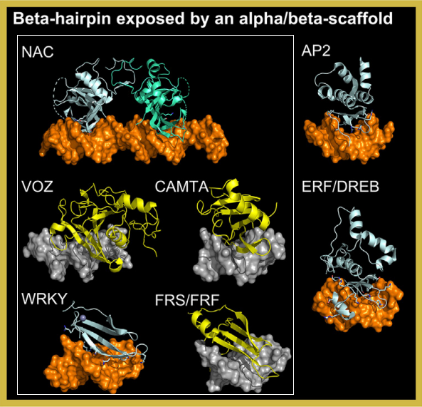

Transcription factors (TFs) in this superclass feature a DNA-binding domain (DBD) composed of an alpha/beta-structured scaffold.
A beta-hairpin inserts into the DNA major groove, serving as the primary DNA-contacting element. This structural motif
is shared across diverse TF families, enabling sequence-specific DNA recognition.
In TFClass, this superclass includes the GCM domain factors, originally identified as a mammal-specific family.
However, five additional plant-specific families have been incorporated: NAC, VOZ, CAMTA, WRKY, and FRS/FRF.
Structural analyses, including crystallographic studies and AlphaFold2 predictions, reveal striking similarities in the DNA-binding modes
of these families, supporting their classification within this superclass
[src].

The GCM (Glial Cells Missing) domain factors are a class of transcription factors characterized by a beta-hairpin motif
embedded within an alpha/beta-scaffold. This beta-hairpin inserts into the DNA major groove, serving as the primary DNA-contacting element.
Originally identified in mammals, the GCM family has been expanded in plants to include structurally related families:
NAC, VOZ, CAMTA, WRKY, and FRS/FRF.
Crystallographic studies of AtANAC019 (PDB: 3SWP) and AtWRKY4 (PDB: 2LEX) revealed that their DNA-binding modes are analogous to that
of the mammalian GCM domain (PDB: 1ODH), with a high degree of structural superimposition in the beta-hairpin region
[src].
Additionally, AlphaFold2 predictions for VOZ and CAMTA families show significant structural alignment with the NAC DBD,
further supporting their inclusion in this superclass. The FRS/FRF family was also added based on structural
similarities with WRKY factors, as confirmed by AlphaFold2 predictions and PSI-BLAST searches
[src].
These findings highlight the evolutionary and functional conservation of the beta-hairpin motif across diverse plant
transcription factor families.